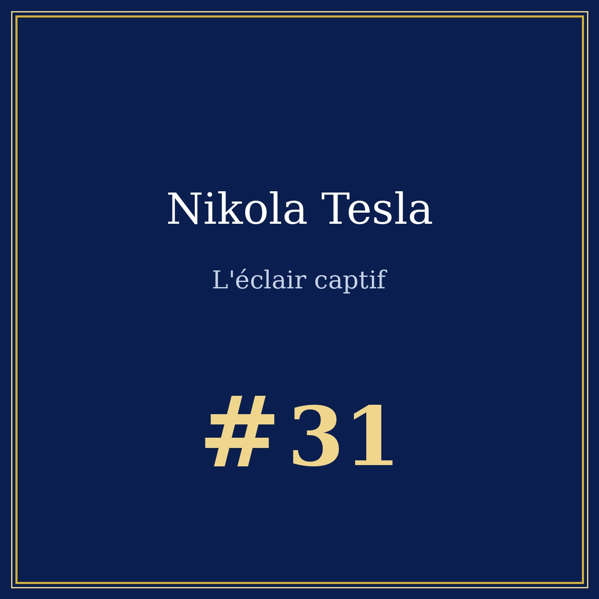
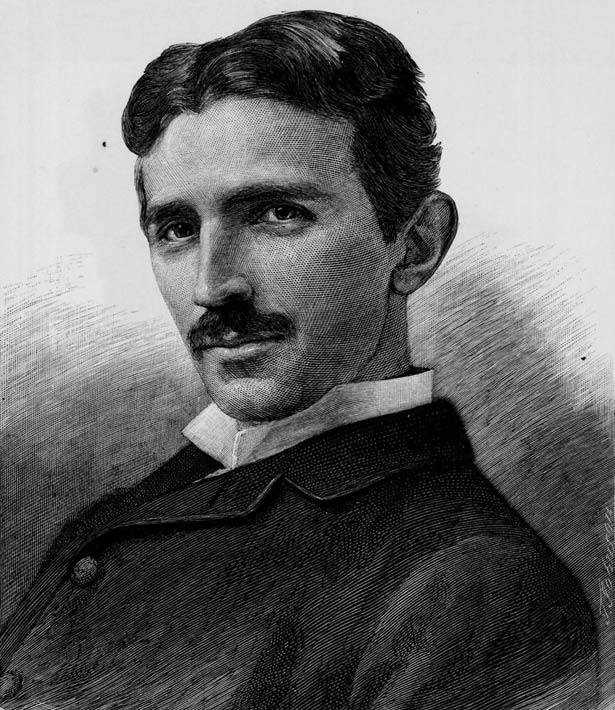

Portrait n°31 — l'homme qui a dessiné un moteur dans le sable
Œuvre de fiction radiophonique et biographique à caractère historique et patrimonial. Les faits présentés dans cet article sont réels et sourcés ; l'entretien est une reconstitution imaginée.


🎧 Écoutez le portrait : Nikola Tesla — L'éclair captif, 14 min 41 — Écouter sur Spotify →
Entretien imaginaire, New York, chambre 3327 de l'hôtel le New Yorker, 1943.
Nikola Tesla naît le 10 juillet 1856 à Smiljan, village de Croatie militaire, dans les confins de l'Empire d'Autriche. Son père est un prêtre orthodoxe ; sa mère, fille de prêtre, ne sait ni lire ni écrire mais connaît par cœur de longues épopées. Un frère aîné meurt d'une chute de cheval en 1863 : père et fils ne se réconcilieront.
En 1875, Tesla entre à l'École polytechnique de Graz. Il passe deux fois le nombre d'examens exigé : le doyen vante « une étoile de premier rang », les professeurs supplieront son père de le retirer de l'école. En 1876, une démonstration lui assène qu'un moteur ne tournera jamais sans balais. Tesla, lui, voit un champ qui tournerait — et en 1882, à Budapest, l'idée lui vient dans un parc : trois bobines, trois courants décalés, un champ qui tourne.
Édison tient le courant continu : simple, sûr, déjà installé dans les villes. Tesla répond par le courant alternatif, plus économique à transporter, mais plus difficile à maîtriser — et, selon les tenants du continu, plus dangereux. Des démonstrations d'électrocution d'animaux sont proposées pour le public : l'argument reste un spectacle.
Car une doctrine ne fait pas une centrale : il faut des machines, des câbles et des capitaux. George Westinghouse visite Tesla en 1888 et achète ses brevets : 60 000 dollars, plus 2,50 dollars de redevance par cheval-vapeur. Il n'a pas inventé le triphasé : il a donné à Tesla les moyens de le construire.
Le brevet est déposé en 1887 sous le numéro 381 968, et délivré le 1er mai 1888. Pas de balais, pas d'étincelle, pas d'usure : un champ tournant induit un courant dans le rotor ; ce courant crée son propre champ, en retard d'un angle, et le rotor se met en mouvement — asynchrone, sans toucher le champ qui le porte. C'est l'idée qui fonde l'électronique moderne : les moteurs, les pompes, les trains en descendent tous.
La guerre se décide en deux rendez-vous. En 1893, à l'exposition universelle de Chicago, Westinghouse électrifie le palais de l'électricité en courant alternatif : victoire technique et de communication. La même année, un consortium se tourne vers Tesla pour le système des chutes du Niagara ; dès 1895, les cataractes s'allument à Buffalo.
Le triphasé devient le standard ; le courant continu d'Edison reste cantonné aux réseaux urbains de tension basse. « Le mien a donné la nuit du monde » : l'invention est celle de Tesla, la victoire celle des machines.
En novembre 1900, J. P. Morgan le convoque : il vient de voir Marconi transmettre une régate au large de Long Island et craint que l'Italien ne prenne la priorité. En mars 1901, Tesla signe : cent cinquante mille dollars pour bâtir une station qui parlerait à Londres et aux navires. Il monte une tour de 187 pieds et descend des tuyaux de fer pour prendre la terre : il veut faire de la Terre un circuit. Puis le financement manque.
Il reste des lueurs, en juillet 1903, dont les journaux parlent. La station n'a jamais parlé. La tour est dynamitée le 4 juillet 1917 ; on en récupère la ferraille pour 17 500 dollars. En 1919, la Radio Corporation of America — le holding d'Edison General Electric — rachète les actifs de Marconi : l'homme du continu rachète la radio de son rival.
En mai 1905, les brevets de Tesla sur le moteur à induction et sur la transmission arrivent à expiration, et les redevances de Westinghouse s'arrêtent net. C'est le « trou de Tesla » : le moteur à induction, le système triphasé et la transmission radioélectrique deviennent utilisables par quiconque, sans une redevance pour l'inventeur. Ses brevets étant tombés dans le domaine public, il ne pouvait plus les reconvertir en droits d'auteur. Sans les redevances, il n'y a plus de laboratoire : il hypothèque le terrain de Wardenclyffe en 1904, puis en 1908, pour payer sa chambre d'hôtel. Le jour, il marche dans Bryant Park.
La « chambre jaune » de l'hôtel le New Yorker n'est pas documentée : c'est une légende, et Tesla lui-même la traite comme telle. Le « rayon de la mort » n'a pas plus de fondement : Tesla a proposé par écrit, pendant la guerre, un « teleforce », un faisceau d'énergie concentré capable d'arrêter des moteurs en vol. Il l'a proposé en 1940 à l'armée américaine, et personne n'a voulu : aucune machine n'a jamais été construite.
Les rapports secrets et les brevets volés à Marconi appartiennent au même registre. En 1943, le Bureau des biens ennemis confisque environ quatre-vingts malles de papiers et de carnets ; un ingénieur du MIT, John G. Trump, y regarde et conclut que le contenu est spéculatif, et qu'il n'y a là aucune arme. En 1952, un tribunal américain reconnaît son neveu Sava Kosanović comme héritier : soixante malles partent pour Belgrade, au musée Nikola Tesla. Il en manquera une vingtaine à jamais. Rien de tout cela ne prouve une invention secrète : Tesla a fait des machines, rien de plus.
Nikola Tesla s'éteint seul le 7 janvier 1943, un peu avant dix heures et demie du soir, dans la chambre 3327 de l'hôtel le New Yorker, à New York. Le médecin légiste conclut à une thrombose coronarienne. Le lendemain matin, une femme de chambre trouve le corps, derrière une porte portant le mot « ne pas déranger ».
En 1960, la Commission internationale des poids et mesures donne son nom à l'unité d'induction magnétique : le tesla. En 2003, l'entreprise américaine Tesla Motors choisit ce nom ; en 2013, un musée s'édifie sur le terrain de Wardenclyffe. La tour n'est plus là : elle est dans le moteur. Il n'a pas fait de la foudre — il a emprunté l'éclair.